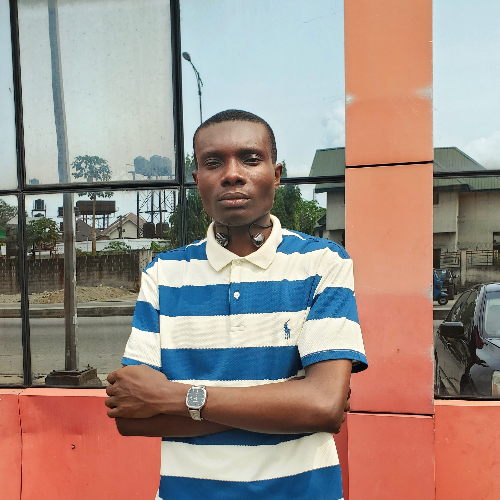

Hi, I'm John. I build products people can actually afford to use.
Welcome to my academic portfolio and student hub. Explore my work, then use the planner to organise your own semester.

Brief biography
I'm a Software Engineering student at MIVA Open University in Port Harcourt, Nigeria. By day I work as a Product Manager at Solagle, defining problems, writing requirements and prioritising what gets built. I also founded EasiBoost Mobility, which converts fairly used petrol tricycles (keke) to electric so e-mobility is within reach of the people who drive them.
- Product Management
- Software Engineering
- CleanTech
- Electric Mobility